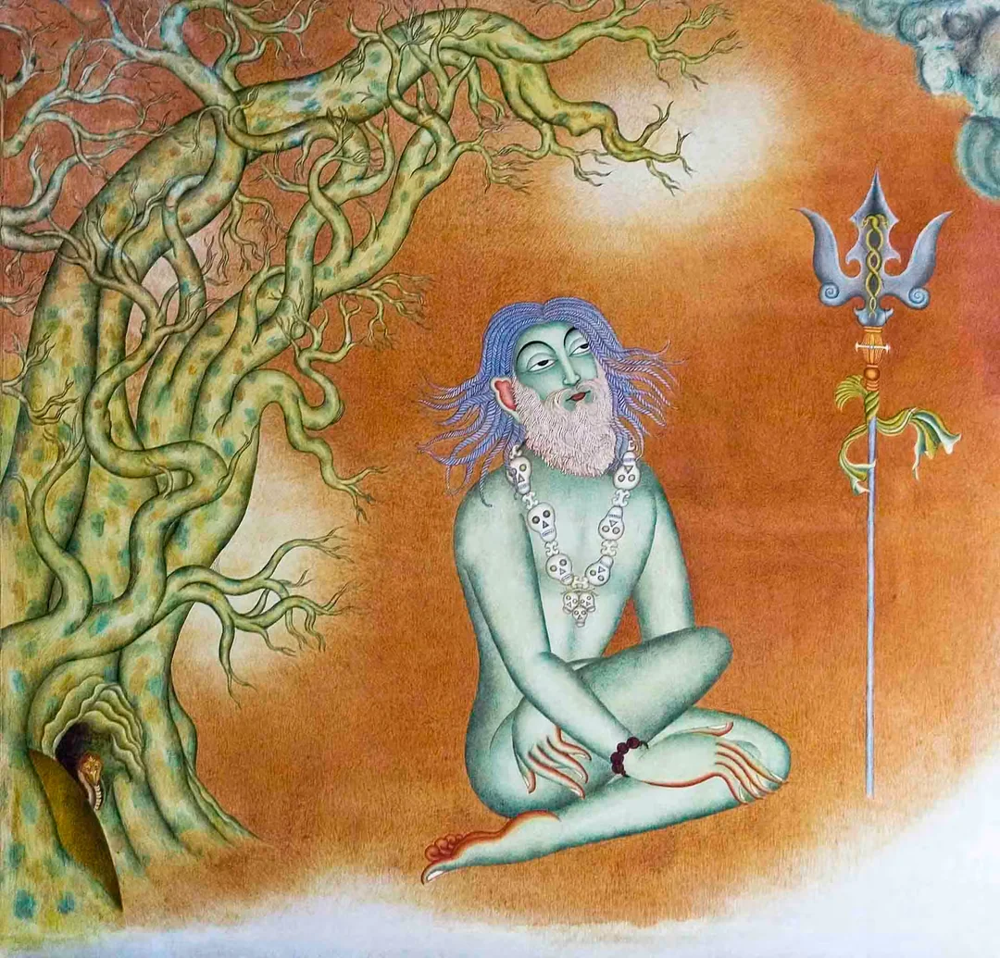

Adiyogi — The First Yogi
15,000 years ago in the upper regions of the Himalayas, a yogi appeared.
Nobody knew where he came from or what his origins were. He just came and sat still – absolutely still. People gathered in huge numbers because his presence was quite extraordinary. They waited, hoping for a miracle, but he was completely oblivious of them. For months on end, there was no sign of life, they couldn’t even see if he was breathing or not. The only signs of life were the tears of ecstasy that flowed out of his eyes on occasion. Because we did not know his name, we did not know who he was, we call him Adiyogi – the first yogi. -Sadhguru
It is from Adiyogi the yogic science originated and has spread over time. However, in recent years, many innovations to yoga have been brought in around the world such as studio yoga and book yoga amongst others. Here, we seek to bring back proper classical yoga, which is a phenomenally powerful science. It is a system that is precisely and meticulously put together as a means of reaching higher dimensions within a human being.

Sadhguru
Sadhguru is a realized yogi and mystic – a man whose passion spills into everything he encounters. With a keen mind, balanced by a heart that knows no boundary, his presence creates an extraordinary opportunity to break through limitations into one’s natural state of freedom, love and joy.
Named one of India’s 50 most influential people, Sadhguru’s work has deeply touched the lives of millions worldwide through his transformational programs. Sadhguru has a unique ability to make the ancient yogic sciences relevant to contemporary minds, acting as a bridge to the deeper dimensions of life. His life and work are constant reminders that the inner sciences are not outdated philosophies, but rather, vitally relevant to our times. His approach does not ascribe to any belief system, but offers methods for self-transformation that are both proven and powerful.
An author, poet, visionary and internationally renowned speaker, Sadhguru’s wit and piercing logic provoke and broaden our thoughts and perception of life. Sadhguru has been an influential voice at major global forums including the UN, MIT, and the World Economic Forum, addressing issues as diverse as socio-economic development, leadership and spirituality.
Dedicated to the physical, mental and spiritual wellbeing of humanity and gifted with utter clarity of perception, Sadhguru possesses a perspective on life and living that never fails to intrigue, challenge and surprise all those he encounters.
The greatest thing that you can do in life is to live to your peak and to set an example that there is a way to live beyond all limitations.
- Sadhguru